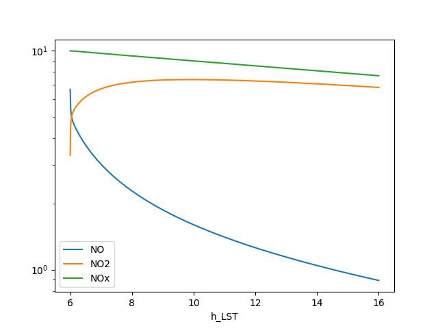
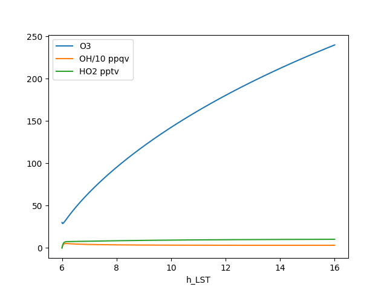

Note
Go to the end to download the full example code
Simple Chemistry Example¶
This test is a simple example from Seinfeld and Pandis ACP Second edition on pg 240.[1].
we extract a basic chemical mechanism with 1 primary organic oxidation (R1). Under high NOx conditions, the primary organic oxidation produces 2 peroxy radical NO oxidations (R2,R3) to produce more radicals (i.e., HO2 or OH). The produced NO2 can photolyze (R4) to reproduce NO and an odd oxygen (O3P) that is assumed to instantaneously produce ozone. Under high-NOx conditions, the ozone can be lost by oxidizing NO (R5). Finally, radicals can be removed lost by producing nitric acid (R6) or peroxides (R7,R8). Lastly, we add an artificial source of HOx (here defined as HO2 + OH) (R9).
[Seinfeld and Pandis Pg 240](https://books.google.com/books?id=YH2K9eWsZOcC&lpg=PT220&vq=RH%20PHOx&pg=PT220#v=onepage&f=false)
Imports¶
import io
import matplotlib.pyplot as plt
from pykpp.mech import Mech
import numpy as np
Define Model¶
A model is made up of:
equations to be solved
inline code to be run before equations are solved (PY_INIT),
options for saving data, and
state initialization (INITVALUES).
mechstr = """
#EQUATIONS
{R1} RH + OH = RO2 + H2O : 26.3e-12;
{R2} RO2 + NO = NO2 + RCHO + HO2 : 7.7e-12;
{R3} HO2 + NO = NO2 + OH : 8.1e-12;
{R4} NO2 = NO + O3 : jno2 ;
{R5} O3 + NO = NO2 + O2 : 1.9e-14 ;
{R6} OH + NO2 = HNO3 : kohno2 ;
{R7} HO2 + HO2 = H2O2 + O2 : 2.9e-12 ;
{R8} RO2 + HO2 = ROOH + O2 : 5.2e-12 ;
{R9} EMISSION = OH : PHOx;
#INLINE PY_INIT
t=TSTART=6*3600
TEND=10*3600+TSTART
P = 99600.
TEMP = 298.15
DT = 60.
MONITOR_DT = 3600.
StartDate = 'datetime(2010, 7, 14)'
Latitude_Degrees = 40.
Longitude_Degrees = 0.00E+00
jno2 = .015;
kohno2 = 1.1e-11;
#ENDINLINE
#MONITOR O3; RH; NO; NO2; OH; HO2;
#INTEGRATOR odeint;
#INITVALUES
CFACTOR = P * Avogadro / R / TEMP * centi **3 * nano {ppb-to-molecules/cm3}
ALL_SPEC=1e-32*CFACTOR;
M=1e9
TOTALNOx=10.
RH = 200.
O2=.21*M
N2=.79*M
H2O=0.01*M
O3=30.
NO = TOTALNOx * 2 / 3
NO2 = TOTALNOx * 1 / 3
PHOx = .1e-3 * CFACTOR
{B = 210.; what to do about B?}
"""
Run the model and visualize¶
load the model in a mechanism,
run it using the odeint solver,
get the output as a pandas dataframe,
add some derived variables for plotting, and
make one plot for NOx species, and one for ozone, OH, and HO2
mech = Mech(io.StringIO(mechstr), incr=3600, verbose=0)
runtime = mech.run(verbose=1, debug=False, solver='odeint')
df = mech.get_output()
df['h_LST'] = df.eval('t / 3600')
df['NOx'] = df.eval('NO + NO2')
df['OH/10 ppqv'] = df.eval('OH * 1e5')
df['HO2 pptv'] = df.eval('HO2 * 1e3')
fig, ax = plt.subplots()
df.set_index('h_LST')[['NO', 'NO2', 'NOx']].plot(ax=ax)
ax.set(yscale='log')
fig.savefig('simple_nox.png')
fig, ax = plt.subplots()
df.set_index('h_LST')[['O3', 'OH/10 ppqv', 'HO2 pptv']].plot(ax=ax)
fig.savefig('simple_ox.png')
- 
- 
/home/runner/work/pykpp/pykpp/pykpp/parse.py:385: UserWarning: Ignoring EMISSION
warn('Ignoring %s' % spc)
Species: 13
Reactions: 9
tstart: 21600
tend: 57600
dt: 60.0
solver_keywords: {}
{t:21600,O3:30,RH:2E+02,NO:6.7,NO2:3.3,OH:1E-32,HO2:1E-32}
odeint {'atol': 0.001, 'rtol': 0.0001, 'mxstep': 1000, 'hmax': 60.0, 'mxords': 2, 'mxordn': 2}
{t:25242,O3:65,RH:1.8E+02,NO:3,NO2:6.7,OH:4.2E-05,HO2:0.0079}
{t:28860,O3:95,RH:1.7E+02,NO:2.3,NO2:7.2,OH:3.7E-05,HO2:0.0085}
{t:32460,O3:1.2E+02,RH:1.5E+02,NO:1.9,NO2:7.4,OH:3.4E-05,HO2:0.009}
{t:36074,O3:1.4E+02,RH:1.4E+02,NO:1.6,NO2:7.4,OH:3.3E-05,HO2:0.0093}
{t:39675,O3:1.6E+02,RH:1.3E+02,NO:1.4,NO2:7.4,OH:3.2E-05,HO2:0.0095}
{t:43276,O3:1.8E+02,RH:1.2E+02,NO:1.3,NO2:7.3,OH:3.2E-05,HO2:0.0097}
{t:46878,O3:2E+02,RH:1.1E+02,NO:1.1,NO2:7.2,OH:3.1E-05,HO2:0.0099}
{t:50479,O3:2.1E+02,RH:1.1E+02,NO:1,NO2:7.1,OH:3.1E-05,HO2:0.01}
{t:54080,O3:2.3E+02,RH:98,NO:0.96,NO2:6.9,OH:3.1E-05,HO2:0.01}
Create Ozone Isopleths like Figure 6.12¶
reload the model in a mechanism and disable monitoring,
define the NOx and VOC increments to run to find ozone points,
run each combniation of NOx and VOC it using the vode solver,
save ozone as a 2d array,
make a plot of the contours of ozone from all NOx and VOC combos.
mech = Mech(io.StringIO(mechstr), monitor_incr=None)
noxppbs = [1, 2, 3, 4, 5, 6, 7, 8, 9, 10, 20, 30 , 40, 50]
vocppbs = [50, 60, 70, 80, 90, 100, 200, 300, 400, 500]
o3vals = np.zeros((len(noxppbs), len(vocppbs)), dtype = 'f')
for ni, n in enumerate(noxppbs):
print(f'NOx [ppb]: {n}', end=': VOC [ppb]:')
for vi, v in enumerate(vocppbs):
print(v, end='.', flush=True)
# reset world to ensure no carryover from previous simulation
mech.resetworld()
CFACTOR = mech.world['CFACTOR']
# override the default initialization of NO, NO2 and RH (VOC)
mech.world['NO'] = n * CFACTOR * 2 / 3
mech.world['NO2'] = n * CFACTOR * 1 / 3
mech.world['RH'] = v * CFACTOR
# Run for this combination of NOx and VOC and store result
mech.run(solver = 'vode')
o3vals[ni, vi] = eval('O3 / CFACTOR', None, mech.world)
print()
fig, ax = plt.subplots()
levels = np.linspace(30, 360, 12)
cs = ax.contourf(vocppbs, noxppbs, o3vals, levels=levels)
fig.colorbar(cs, label='ozone ppb')
ax.set_yscale('log', base=10, subs=[2,3,5])
ax.set_xscale('log', base=10, subs=[2,3,5])
ax.set(title='Ozone Isoplets (PHOx=0.1 ppt/s)', xlabel='RH [ppb]', ylabel='NOx [ppb]')
fig.savefig('ekma.png')
/home/runner/work/pykpp/pykpp/pykpp/parse.py:385: UserWarning: Ignoring EMISSION
warn('Ignoring %s' % spc)
Species: 13
Reactions: 9
NOx [ppb]: 1: VOC [ppb]:50.60.70.80.90.100.200.300.400.500.
NOx [ppb]: 2: VOC [ppb]:50.60.70.80.90.100.200.300.400.500.
NOx [ppb]: 3: VOC [ppb]:50.60.70.80.90.100.200.300.400.500.
NOx [ppb]: 4: VOC [ppb]:50.60.70.80.90.100.200.300.400.500.
NOx [ppb]: 5: VOC [ppb]:50.60.70.80.90.100.200.300.400.500.
NOx [ppb]: 6: VOC [ppb]:50.60.70.80.90.100.200.300.400.500.
NOx [ppb]: 7: VOC [ppb]:50.60.70.80.90.100.200.300.400.500.
NOx [ppb]: 8: VOC [ppb]:50.60.70.80.90.100.200.300.400.500.
NOx [ppb]: 9: VOC [ppb]:50.60.70.80.90.100.200.300.400.500.
NOx [ppb]: 10: VOC [ppb]:50.60.70.80.90.100.200.300.400.500.
NOx [ppb]: 20: VOC [ppb]:50.60.70.80.90.100.200.300.400.500.
NOx [ppb]: 30: VOC [ppb]:50.60.70.80.90.100.200.300.400.500.
NOx [ppb]: 40: VOC [ppb]:50.60.70.80.90.100.200.300.400.500.
NOx [ppb]: 50: VOC [ppb]:50.60.70.80.90.100.200.300.400.500.
Total running time of the script: ( 0 minutes 47.826 seconds)